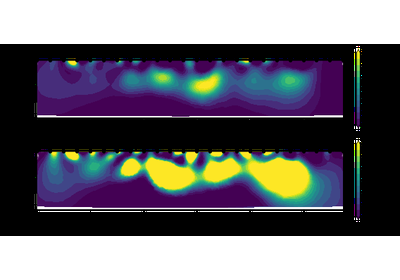

Growing
0.1.0
Contents:
Getting Started
Gallery of examples
Monitoring of drying under winter wheat by ERT
Growing
Docs
»
Gallery of examples
View page source
Gallery of examples
¶
Below is a gallery of examples
Monitoring of drying under winter wheat by ERT

Fig. 1
Monitoring of drying under winter wheat by ERT
¶